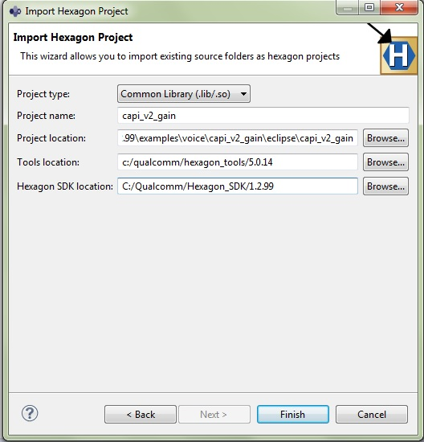

Voice examples
Overview
The Hexagon SDK contains projects which are intended to serve as templates for creating new voice custom pp modules and topology definitions. Voice Tx and Rx processing customization is supported with dynamic loading of capi v2 modules.
-
CAPI V2 - Wrapper around a Post/Pre processing algorithm.
Voice FrameworkCAPI V2 WrapperCore Algorithm
The SDK contains the following examples (note that some of these are not currently working on some targets. Please refer to the feature matrix for details):
-
capi_v2_gain - Example CAPI_V2 based PP module, applies a gain to PCM data
-
capi_v2_gain_32ch - Example CAPI_V2 based pp module, this example explains on the usage of multi-channel module implementation, currently framework supports upto 32 channels
-
capi_v2_gain_cpp - Example CAPI_V2 based pp module, this example explains the usage of C++14 functionaliy in CAPI_V2 module. This is the first module which supports C++14 and runs its unit-test on QURT instead of running standalone.
-
capi_v2_passthru - Example CAPI_V2 based pp module, basically an empty shell and has no effect on the PCM data
-
capi_v2_dummy_ecns - Example CAPI_V2 based dummy ECNS(Echo Cancellation and Noise Suppression) module on Voice Path. This example describes, how to integrate a custom ECNS module on Voice path and supports single, dual and quad microphone input scenarios. Please run the unit test for the example followed by on target verification. Please refer capi_v2_dummy_ecns for implementation details.
-
capi_v2_voice_imc - Example CAPI_V2 for Inter Module communication between Tx and Rx modules on Voice Path . This algoritm shows an important feature of CAPIv2 interface - Intermodule communication between Voice modules. There are two modules in this example - one running on TX path and the other running on RX path. Please run the unit test for the example followed by target verification. Please refer capi_v2_voice_imc for implementation details.
Libraries may contain one or more pp modules. The examples in this SDK are currently built as different libraries but there is no reason they cannot be combined into one.
Building - architecture
CAPI V2
Building a make.d project provides information on how to build the SDK examples and how to interpret and modify the makefiles.
-
Create a module test file
-
The module test file loads the library and calls the test framework. See Test sources for more information
-
-
Create a test configuration file
-
The test configuration file exercises the module. See Test configuration file for more information
-
-
Build the library and the q test executable
-
Below shown diagram takes capi_v2_gain as an example
-
Test the new CAPI V2 module
-
A module can be tested as a standalone unit in the simulation environment
-
The test configuration file defines the test commands to be executed
-
The following diagram shows the structure of an CAPI V2 module q test.
Building CAPI V2 modules
Eclipse based
-
Import the project from specific example to be tested. Import the project as Common Library project. As an example, capi_v2_gain is used
File -> Import -> Hexagon C/C++ Project Type : Common Library (.lib/.so) Project location: <HEXAGON_SDK_ROOT>\examples\voice\capi_v2_gain\eclipse\capi_v2_gain
 Ensure that project path, SDK root and Tools root are set appropriately.
-
Build the project
Right click on project -> Build Configuration -> Build all
This project builds Dynamic and Static libraries in debug and release mode. Verify all libraries to be built.
NOTE : Snapshot may vary slightly based on version of Eclipse plugins used.
Command line interface
Building and testing a library is clubbed together in a single command. The steps to generate a library are covered in command line based unit testing .
Moving ahead
Unit testing
To unit test an CAPI V2 module click here
Copyright © 2018 Qualcomm Technologies Inc. All rights reserved.